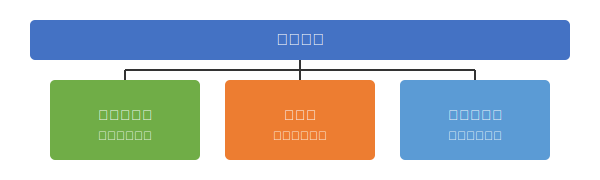
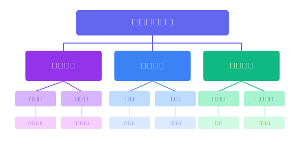
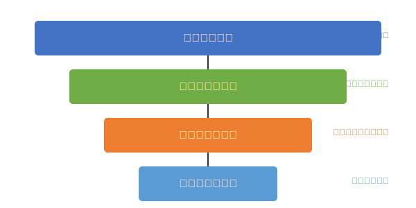

股票基本面分析概述
基本面分析是一种评估公司实际价值的方法，通过分析公司的财务数据、运营模式、行业状况和经济环境，确定公司的内在价值。它帮助投资者判断股票是否被高估或低估，是价值投资的核心。
基本面分析与技术分析的区别
| 比较维度 | 基本面分析 | 技术分析 |
|---|---|---|
| 分析对象 | 公司财务状况、行业前景、竞争优势等 | 市场价格、交易量、走势图形 |
| 分析方法 | 财务报表分析、行业分析、竞争分析 | 图表分析、形态识别、指标计算 |
| 时间视角 | 长期、面向未来 | 短期、基于历史模式 |
| 核心假设 | 价格最终会反映价值 | 历史会重复，价格走势有规律 |
| 适用场景 | 价值投资、长期持有 | 短线交易、波段操作 |
宏观经济分析
评估GDP增长率、通胀率、利率等
行业分析
研究行业发展趋势、市场规模、竞争格局
公司分析
包括定性分析和定量分析
估值分析
确定公司合理价值范围
投资决策
基于分析结果做出买入、持有或卖出决策
公司基本面分析
什么是公司基本面
公司基本面是指影响公司价值和未来发展的各种因素，包括财务状况、经营模式、市场地位、行业环境、管理团队等。基本面分析通过评估这些因素来确定公司的内在价值和投资潜力。
定量分析
关注数字化指标，依赖于公司的财务报表和数据：
- 损益表数据分析
- 资产负债表分析
- 现金流量分析
- 财务比率计算
- 历史业绩趋势
定性分析
评估难以量化的因素：
- 品牌价值与市场地位
- 企业商业模式可持续性
- 核心竞争优势
- 管理团队能力
- 公司治理结构
- 行业前景与发展趋势
基本面分析核心要素
盈利能力
评估公司创造利润的能力，关注毛利率、净利率、ROE、ROA等指标
成长性
分析收入增长率、利润增长率、市场份额变化等，预测未来发展空间
财务健康度
检查资产负债结构、偿债能力、现金流状况，评估财务风险
行业地位
分析市场份额、竞争格局、议价能力、行业壁垒等因素
管理质量
评价管理团队的经验、诚信度、战略眼光和执行力
财务报表解读
资产负债表
反映特定日期的财务状况，是企业资产、负债和所有者权益的静态"快照"。
主要组成部分：
-
•
流动资产：现金、应收账款、存货等
-
•
非流动资产：固定资产、无形资产等
-
•
流动负债：短期借款、应付账款
-
•
非流动负债：长期借款、债券
-
•
所有者权益：股本、资本公积、未分配利润等
利润表
反映一定期间的经营成果，展示公司的收入、成本、费用和利润情况。
主要组成部分：
-
•
营业收入：销售商品、提供服务获取的收入
-
•
营业成本：销售商品、提供服务的直接成本
-
•
毛利润：营业收入减去营业成本
-
•
期间费用：销售/管理/财务/研发费用
-
•
净利润：最终盈利结果
现金流量表
反映现金流入和流出状况，展示公司的现金产生和使用情况。
主要组成部分：
-
•
经营活动现金流：核心业务产生的现金
-
•
投资活动现金流：购建资产、收购投资的现金流
-
•
筹资活动现金流：融资、分红、偿债的现金流
-
•
现金净增加额：期末与期初现金差额
-
•
期末现金余额：期末可用现金总量
财务报表分析技巧
趋势分析
关注指标变化趋势比绝对数值更重要
结构分析
分析各项目占总额的比例
同业比较
与行业平均水平和标杆企业对比
关注异常
注意数据异常变动，挖掘背后原因
重视附注
财务报表附注包含关键解释信息
财务报表分析的注意事项
- 不同行业的财务特点差异明显，需要进行行业针对性分析
- 需要关注财务数据的连续性和一致性，防止被操纵的财务数据误导
- 单一指标不足以全面反映公司状况，需要综合多维度分析
- 财务报表反映的是过去情况，预测未来还需结合公司战略和行业前景
- 留意非经常性损益的影响，关注扣非后的真实盈利能力
关键财务指标分析
市盈率(P/E)
定义与计算
市盈率是每股市价与每股盈利的比率，反映投资者愿意为每1元收益支付的价格。
市盈率类型
静态市盈率
使用过去一年的每股收益计算，是市场广泛谈及的市盈率
动态市盈率
考虑了未来盈利的变化，使用预测每股收益计算
市盈率的解读参考
| 市盈率区间 | 一般解读 |
|---|---|
| < 0 | 公司亏损，不适用市盈率分析 |
| 0-10 | 可能存在投资机会，但需警惕经营风险 |
| 11-20 | 相对合理的估值区间 |
| 21-30 | 估值偏高，需关注成长性支撑 |
| 31-50 | 高估值，需有高成长性支撑 |
| > 50 | 极高估值，存在较大投资风险 |
*注意：不同行业的合理市盈率水平差异较大，需要与同行业平均水平对比。高成长性行业（如科技、医药）通常具有较高的市盈率。
使用注意事项
- 市盈率低不一定意味着价值被低估，可能反映市场对公司前景的悲观预期
- 高增长企业通常有较高市盈率
- 需要结合行业特点、成长性和其他财务指标综合分析
- 亏损企业不适用市盈率分析
换手率
定义与计算
换手率是衡量股票在一定时期内转手买卖频率的指标，反映股票的活跃度和流通性。
换手率分析参考
| 日换手率 | 一般情况分析 |
|---|---|
| 1%-2.5% | 正常交易水平 |
| 3%-7% | 相对活跃状态 |
| 7%-10% | 强势股，高度活跃 |
| 10%-15% | 可能有大资金密集操作 |
| > 15% | 极度活跃，潜在爆发股 |
换手率的影响因素
交易方式
交易技术进步和功能增强会提高换手率
交收期
交收期越短，换手率越高
投资者结构
散户为主的市场换手率通常较高
市场类型
新兴市场通常换手率高于成熟市场
换手率的投资应用
- 高位高换手：可能是获利盘套现，股价可能下跌
- 低位放量：新资金可能在进场，未来可能上涨
- 持续高换手：主力可能在洗盘，需关注股价变化方向
- 突然放量：可能有重大消息或事件影响
其他重要财务指标一览
盈利能力指标
-
净资产收益率(ROE)衡量股东权益的回报率，反映企业利用股东资金创造利润的能力ROE = 净利润 ÷ 平均股东权益 × 100%
-
总资产收益率(ROA)衡量企业利用资产创造利润的能力ROA = 净利润 ÷ 平均总资产 × 100%
-
毛利率反映产品定价能力和成本控制能力毛利率 = (营业收入 - 营业成本) ÷ 营业收入 × 100%
偿债能力指标
-
资产负债率反映企业负债水平和风险状况资产负债率 = 总负债 ÷ 总资产 × 100%
-
流动比率衡量企业短期偿债能力流动比率 = 流动资产 ÷ 流动负债
-
速动比率更严格地衡量企业短期偿债能力速动比率 = (流动资产 - 存货) ÷ 流动负债
估值指标
-
市净率(P/B)股票价格与每股净资产的比率P/B = 股票价格 ÷ 每股净资产
-
市销率(P/S)股票价格与每股销售额的比率P/S = 股票价格 ÷ 每股销售额
-
股息收益率年度股息与股票价格的比率股息收益率 = 年度股息 ÷ 股票价格 × 100%
股票板块分析
行业板块
根据上市公司的业务性质和产品服务类型进行分类。
主要行业板块
投资参考
- • 不同行业周期不同，对宏观经济变化的敏感度也不同
- • 周期性行业（如原材料、能源）与经济周期高度相关
- • 防御性行业（如医药、消费必需品）抗风险能力较强
地域板块
根据上市公司的地理位置和所在区域进行分类。
主要地域板块
投资参考
- • 各地区经济政策和发展重点不同，产业集群特点明显
- • 重要区域政策（如自贸区、雄安新区）会带动相关地域板块
- • 关注区域协同发展战略，如粤港澳大湾区、长三角一体化
概念板块
根据上市公司的某些特定属性、题材或共同要素进行分类。
热门概念板块
投资参考
- • 概念板块往往是资金炒作的热点，波动较大
- • 关注政策导向和技术创新推动的新兴概念
- • 区分真成长与伪成长，评估公司在概念中的真实份量
板块分析的投资应用
把握热点轮动
识别资金流向，提前布局未来热点板块
降低选股难度
先选优质板块，再在板块内选优质个股
风险分散
了解不同板块相关性，合理配置资产
政策导向
关注国家政策支持的重点板块，把握长期投资方向
板块轮动规律
不同板块在经济周期的不同阶段表现各异，了解板块轮动规律有助于把握投资时机：
- 衰退期初期：防御型板块(必需消费品、医疗保健)表现较好
- 衰退期末期：周期性板块(原材料、工业)开始活跃
- 复苏期：可选消费品、信息技术板块表现优异
- 繁荣期：周期性行业持续上涨，金融板块表现突出
- 衰退前：能源、公用事业等后周期板块表现较好
整合分析框架
基本面分析实用工作流
初步筛选
- 板块趋势确认
- 基本财务指标筛选(ROE>15%、负债率<60%等)
- 建立初选股票池
深度分析
- 财务报表全面解读
- 商业模式与竞争优势评估
- 管理层与公司治理评价
- 成长性与风险评估
价值评估
- 相对估值法(PE、PB等)
- 绝对估值法(DCF等)
- 确定合理价值区间
投资决策
- 设定安全边际
- 确定仓位配置
- 制定买入卖出策略
SWOT分析框架
Strengths (优势)
- 市场份额与地位
- 品牌价值与认可度
- 技术专利与研发能力
- 管理团队与公司文化
- 成本优势
Weaknesses (劣势)
- 高负债水平
- 产品线老化
- 管理问题
- 资本支出需求
- 盈利能力不足
Opportunities (机会)
- 新兴市场扩张
- 技术创新趋势
- 政策支持
- 行业整合机会
- 消费习惯变化
Threats (威胁)
- 竞争加剧
- 替代产品威胁
- 监管风险
- 宏观经济波动
- 技术变革
初学者实践指南
基本面分析入门步骤
打好基础
- 学习基本财务知识
- 熟悉行业分类与特点
- 了解宏观经济影响
从简单开始
- 先关注少数几个核心指标(PE、ROE等)
- 从熟悉的行业入手
- 挑选优质蓝筹公司练习分析
工具应用
- 利用财经网站和App查看基础数据
- 学习阅读上市公司年报
- 关注权威分析师的研报学习方法
知识扩展
- 逐步掌握更多财务指标
- 学习行业特定分析方法
- 了解更复杂的估值模型
推荐资源
入门书籍
- 《一本书读懂财报》
- 《公司基本面分析》
- 《聪明的投资者》
进阶读物
- 《证券分析》(格雷厄姆)
- 《巴菲特致股东的信》
- 《股市真规则》
在线工具
- 同花顺
- 东方财富
- Wind(专业)
- Choice(专业)
学习网站
- 投资者教育网站
- 证监会官网资料
- 财经MOOC课程
常见误区与注意事项
过度依赖单一指标
综合多指标分析更准确，单一指标可能误导决策
忽视行业差异
不同行业指标标准差异大，同行业比较更有意义
忽略宏观环境
经济周期、政策变化等宏观因素对企业表现影响巨大
只看数字不看质
财务数据背后反映企业质量，需关注经营模式与竞争优势
短视决策
基本面分析适合中长期投资，不应期望短期获利
投资者的最终提醒
通过系统学习本指南，初学者可以建立完整的股票基本面分析框架，为投资决策提供坚实基础。
记住，基本面分析不是为了追求短期利润，而是为了识别真正有价值的企业进行长期投资。